Oysters can filter up to 50 gallons of water a day, making them nature’s own water purifiers. Their ability to clean and shape their environment is a fascinating parallel to art—taking in messy, raw elements around them and transforming it into something clear and functional. Their layered shells are a result formed by time and pressure, reminding us that patience can create something super cool. Anyway, this is some new music I've been listening to. Enjoy my log! ૮꒰˶•༝•˶꒱ა
Day 3, Exercise 2
14th Aug, 2024
The task for our first assignment was to create compositions using the following guidelines. To compose these, we used p5.js—since we were just getting started, using this model to code was easier for us to get used to the language. The syntax is simple, and hence I didn't feel overwhelmed using it compared to coding on VS Code. These are the guidelines I was asked to follow for my compositions! ૮꒰ ˶• ༝ •˶꒱ა
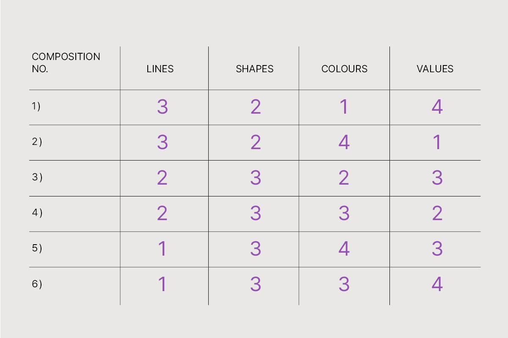
Day 4, Exercise 3
19th Aug, 2024
Today we were asked to note down 3 good and bad examples of interaction design principles from our everyday life. These principles include: feedback, signifier, and mapping.
A signifier is a visual, auditory, or tactile cue that tells users what actions are possible. It highlights the purpose or function of an element, like a "Submit" button or a door handle. It helps users understand how to interact with the system. Clear signifiers make interfaces intuitive and user-friendly.Feedback is the system’s response to a user’s action, letting them know if it was successful or not. For example, a sound when a button is clicked or a loading spinner while content is loading. It keeps users informed and reassures them their actions are recognized. Good feedback prevents confusion and frustration.Mapping refers to the relationship between controls and their effects in the system. For instance, a car steering wheel turning left should make the car move left. Good mapping ensures that users can easily predict what will happen when they perform an action, making interactions natural and intuitive.
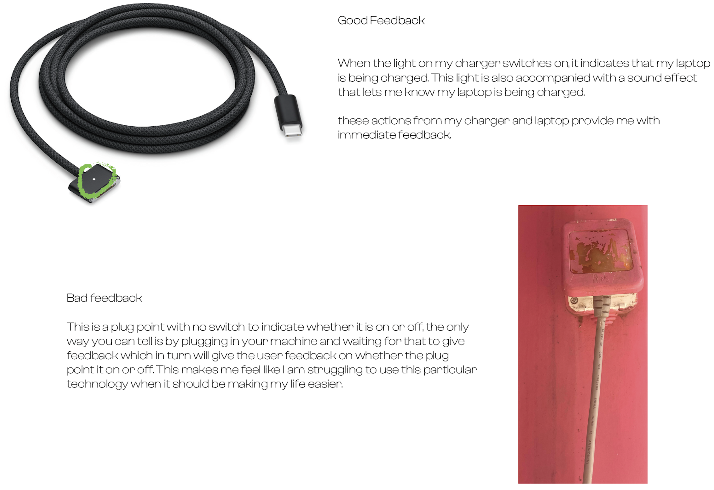
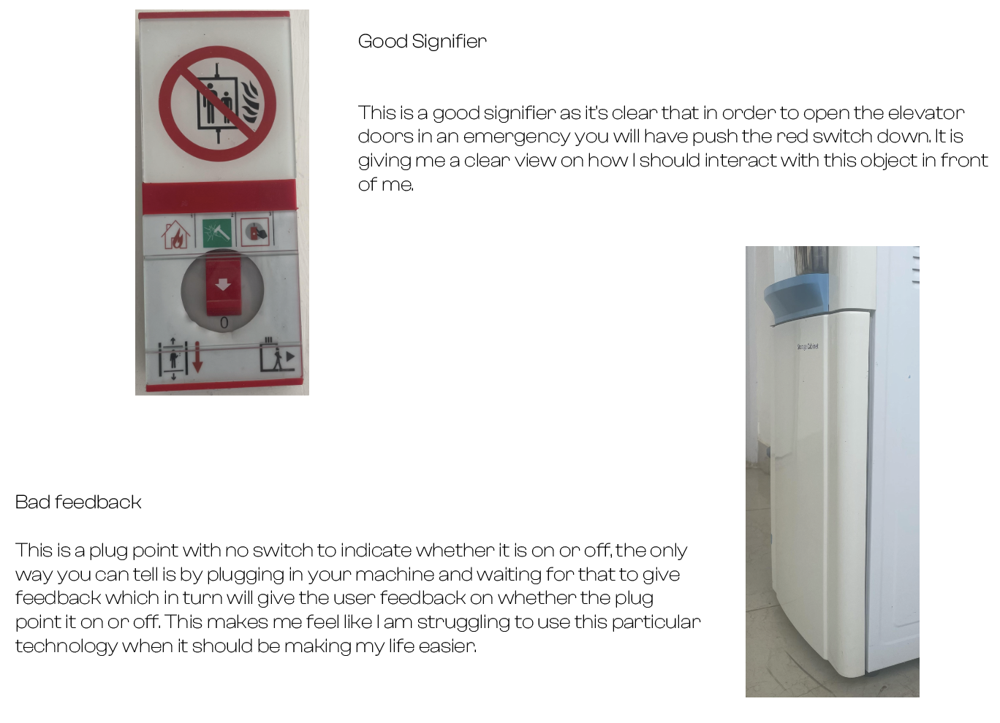
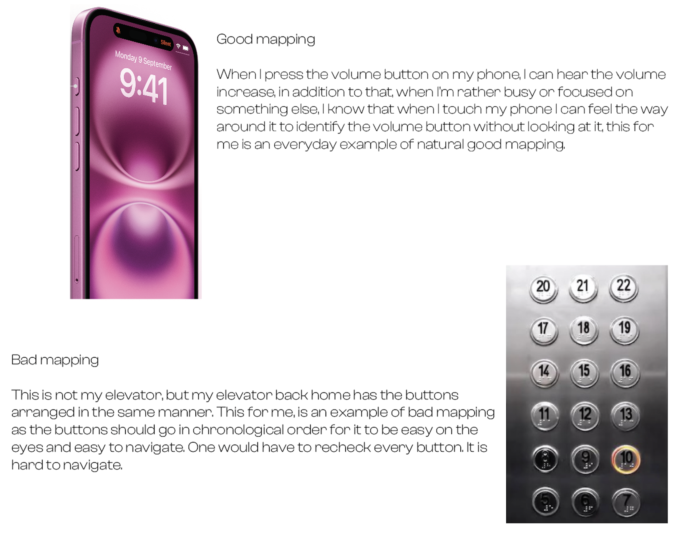
Day 5, Exercise 1
21st Aug, 2024
The task for the day is to analyze any model of an iPod, identify the atoms, molecules, and organisms, and then translate that for a portrait and landscape screen.
 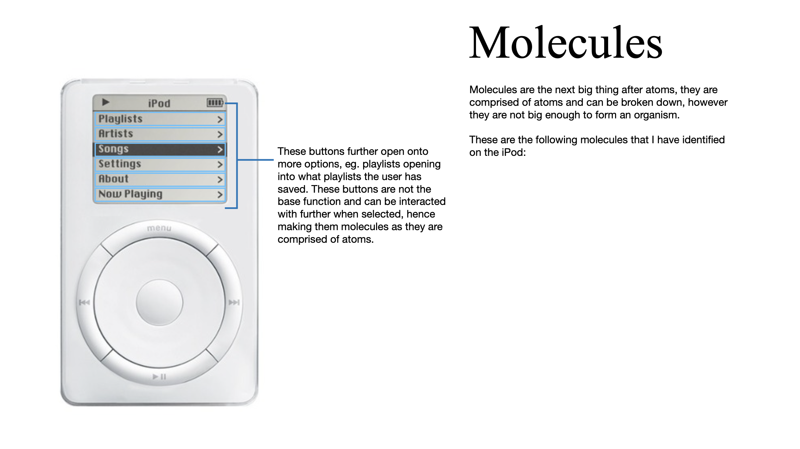
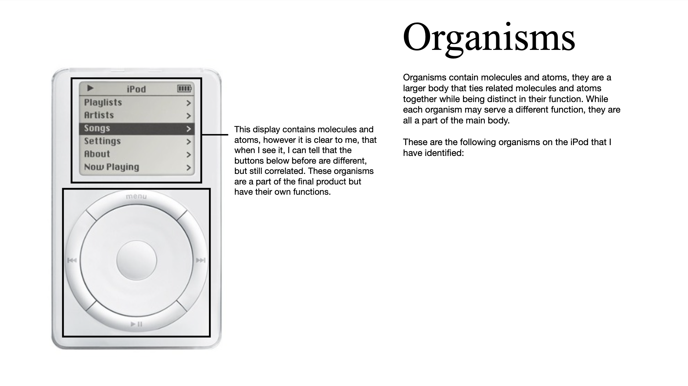
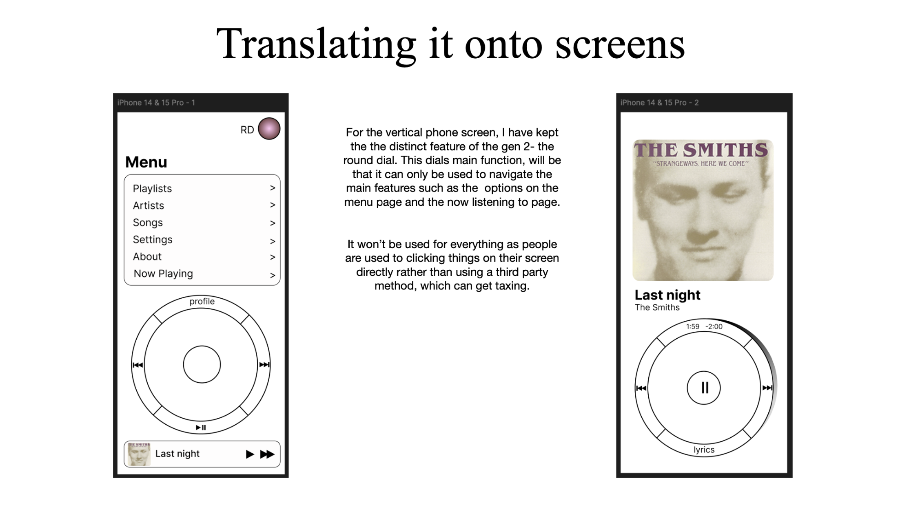
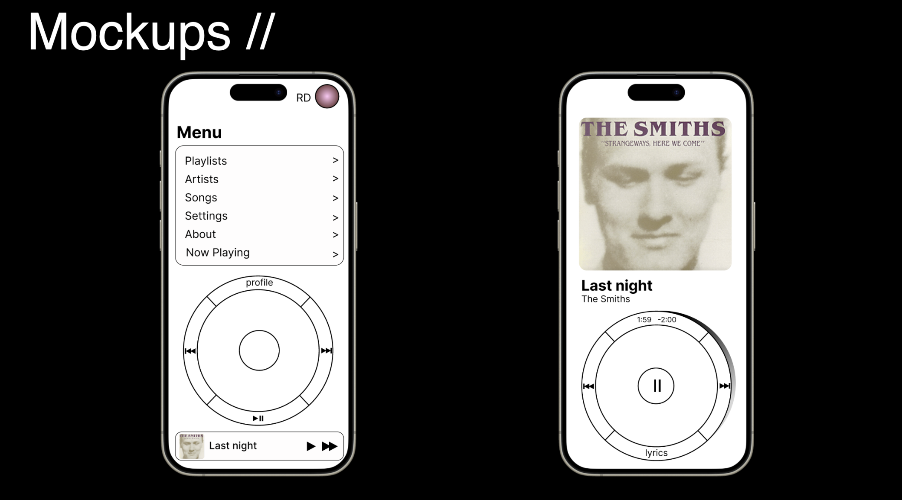
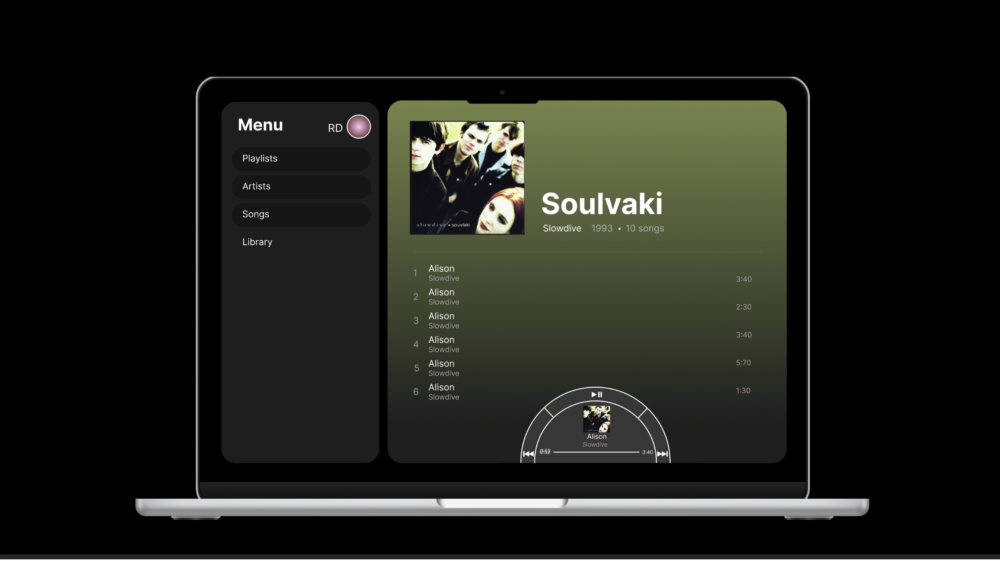
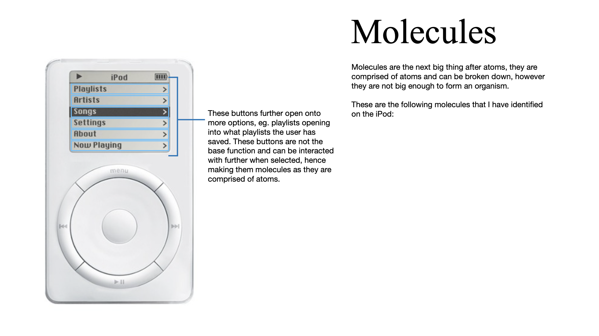
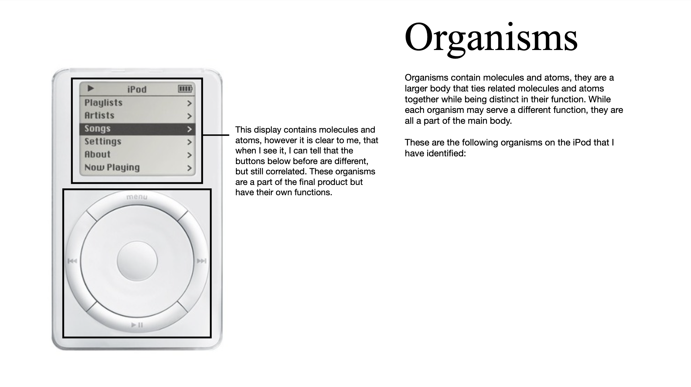
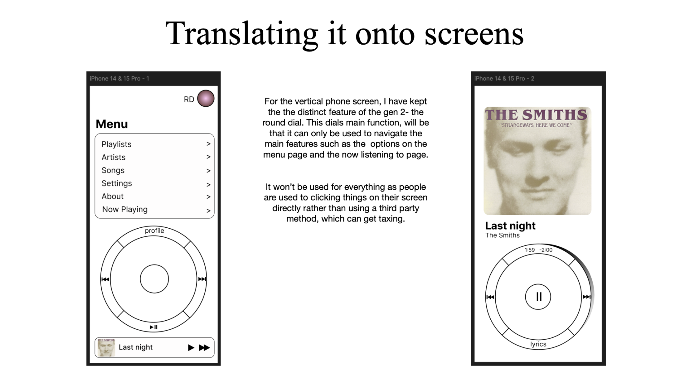
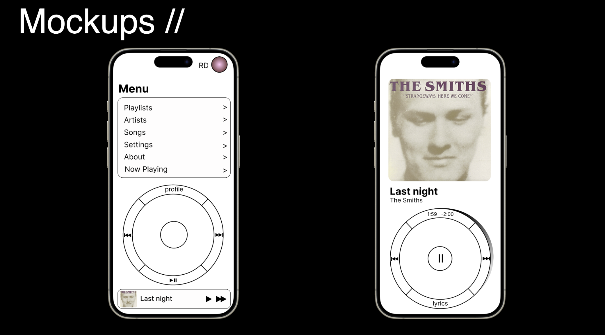
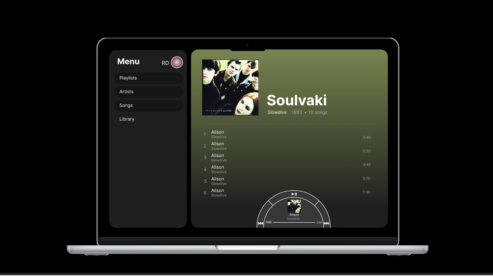